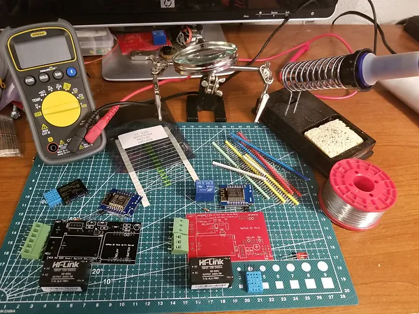
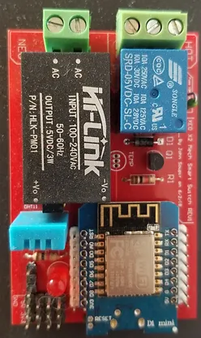

DIY Smart Switch Project
These Wi-Fi connected Smart Switch boards can be used to control almost anything: lamps, fans, coffee maker, radio, etc… It also has a built-in temperature and humidity sensor for monitoring conditions in any room. They are compatible with Google Assistant and Amazon Alexa voice controls. For example: “Hey Google, turn on my fan” or “Alexa, what’s the humidity in the basement?”.
Last year I made version 1.0 of my smart switch. It was a very crude prototype - even so it was very useful and a lot of fun. I decided to design an improved version this year. I wanted to make it easy to assemble, safe and reliable. I ended up designing two models; one with a mechanical relay to handle larger loads and one with a solid state relay that would be smaller and silent for lighter loads.
I started by choosing my components and learning about how to design a circuit board. It turned out to be easier than I had originally thought. After some research I settled on CircuitMaker for designing my boards. CircuitMaker is free and not as complicated as some other programs I tried. Once I had my schematics planned out on paper I started working on my design in CircuitMaker. After entering the components I would be using into CircuitMaker I created a digital schematic. Once the schematic is finished it’s time to design the circuit board. The first step is arranging the components. Then the software can automatically route most of the traces based on the schematic. When my design was complete, I needed to have it manufactured. There are lots of companies to choose from. Based on their prices and good reviews I chose PCBWay. They are based in China and will manufacture 10 boards for $5 (plus shipping). After placing my order my boards were completed in about 3 days and arrived to my door in about a week. After all the parts arrived it was time to put everything together. After a bit of soldering and coding they were complete.